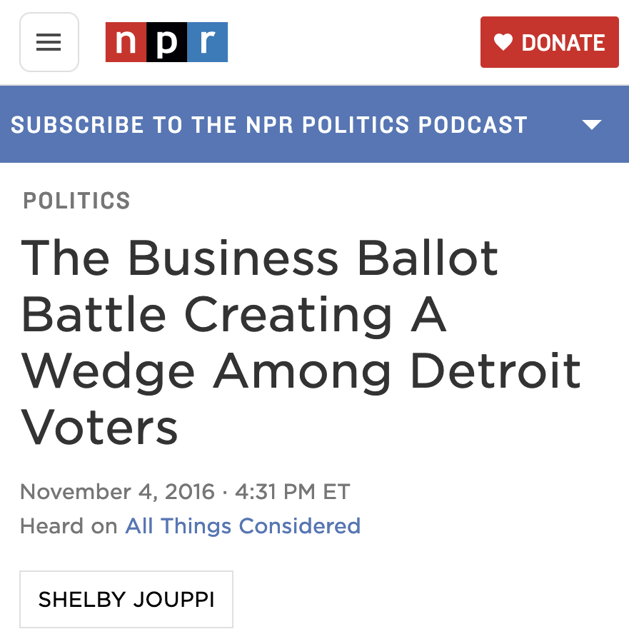

In 2016, Detroit voters passed one of the nation’s first city-wide community benefits ordinances, that required developers seeking tax breaks for large construction projects to meet with a group of community representatives before receiving approval from city council.
The law made it to the ballot because some Detroiters believed the city wasn’t negotiating effectively on behalf of residents when cutting deals with large developers.
I reported on the ballot measures for NPR’s All Things Considered in 2016, and one year later, I wondered what had come out of the new addition to the Detroit development process.
I spent two months interviewing developers, city officials and Detroit residents who participated in the meetings, as well as submitting FOIA requests and combing through city documents in order to compile the only comprehensive report on the first year of this ordinance.
While city officials were touting their successful implementation of the ordinance, many residents who participated felt their concerns were not adequately responded to by the developers. When all was said and done, the city had failed to negotiate any tangible, enforceable community benefits with the developers of the multi-million-dollar projects.